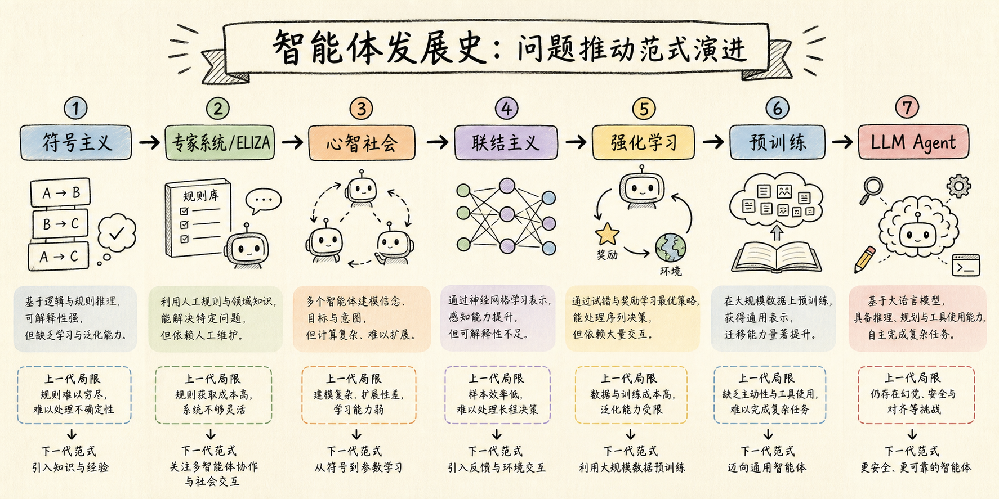
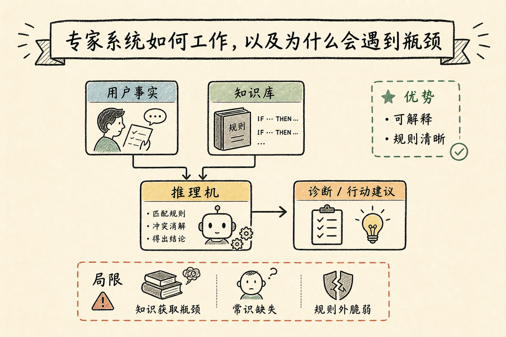
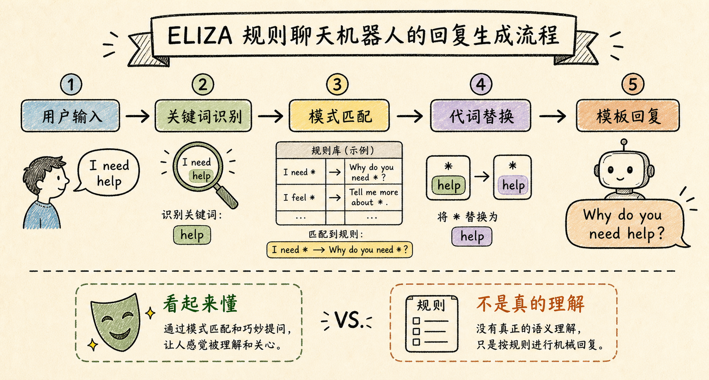
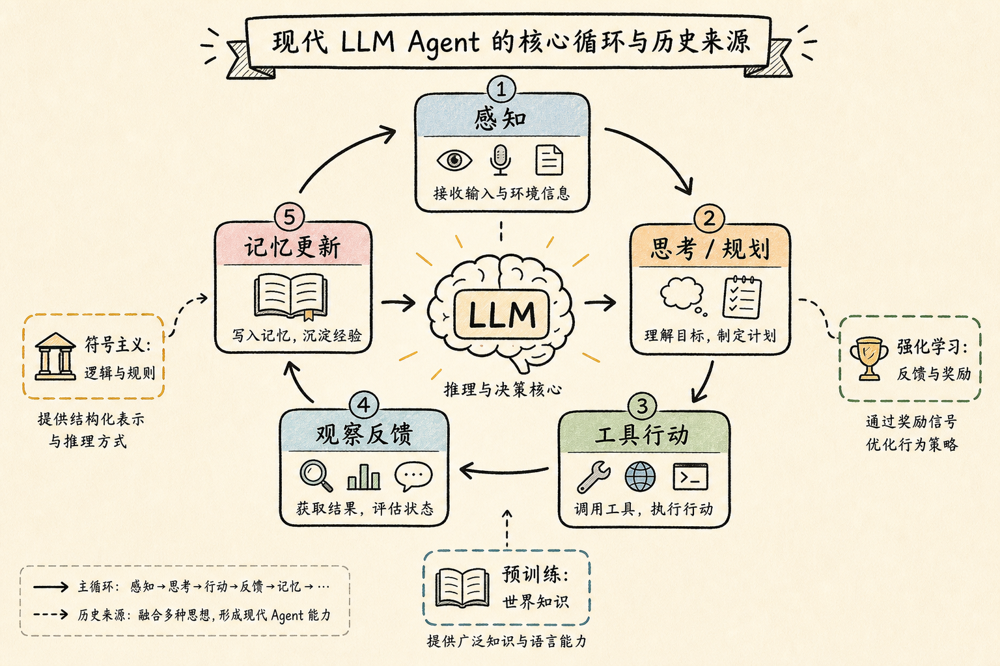

Hello agents学习chapter2
今天学习 Datawhale《Hello Agents》第二章《智能体发展史》。这一章最大的价值，是把现代 Agent 放回历史里看：它不是突然出现的概念，而是符号主义、规则系统、分布式智能、强化学习和大模型预训练一步步汇合后的结果。

第一条线索：符号主义相信智能可以被写成规则
早期 AI 的核心信念是：只要能把世界知识表示成符号，再配上逻辑推理过程，机器就可以表现出智能。这背后对应的是物理符号系统假说，也就是把智能理解成“符号的计算与处理”。
专家系统就是这种思想的典型成果。它把专家经验写进知识库，再由推理机根据用户提供的事实进行推导。它的优势是可解释、规则清楚，在边界明确的专业任务中很有力量。

但符号主义也很快遇到两个硬问题：第一，真实世界的常识太多，不能靠人手一条条写完；第二，现实环境变化复杂，规则系统遇到没有覆盖的新情况时会很脆弱。这也是后来学习范式兴起的重要原因。
ELIZA：看起来理解，不等于真的理解
第二章还讲到 ELIZA 这个早期聊天机器人。它通过关键词识别、模式匹配和模板回复，让用户感觉机器似乎在理解自己。比如识别到某个句式后，把用户的话改写成开放式问题。
这一段对我很有启发：自然语言交互的表面效果，可能来自规则技巧，而不一定来自真正的语义理解。ELIZA 的历史意义不只是“早期聊天机器人”，更像是在提醒我们，不要轻易把流畅回答等同于真实智能。

第二条线索：智能不一定来自单一中心
之后的“心智社会”思想提出了另一个视角：复杂智能可以由许多简单单元协作涌现出来。这和今天的多智能体系统很容易联系起来。一个复杂任务可以拆成多个角色、多个模块、多个步骤，让它们通过协作完成整体目标。
我理解这部分的关键词是“分工”。单个智能体不一定要完美，系统可以通过组合多个有限能力的模块，获得更强的整体能力。
第三条线索：学习改变了能力的来源
符号主义主要依赖人类提前写入知识，而联结主义和强化学习让智能体开始从数据和交互中学习。神经网络通过大量样本学习表示，强化学习则强调智能体在环境中试错，通过奖励反馈优化策略。
强化学习对 Agent 很关键，因为 Agent 做的往往不是一次性判断，而是序贯决策：当前这一步可能不是最优，但它可能为未来带来更高的累积收益。AlphaGo 这类系统就体现了“为了长期目标规划行动”的思路。
预训练：用海量数据绕开知识获取瓶颈
大模型预训练让我看到了另一种“知识进入系统”的方式。符号主义需要人把知识手工编码进规则库，而预训练模型通过海量文本数据和自监督学习，把语言规律、事实知识和常见推理模式压缩进模型参数。
这不是完美解决方案，因为互联网数据会带来偏差、过时和幻觉问题。但它确实让智能体获得了前所未有的通用知识基础，也让“先理解高层目标，再拆解行动”的现代 Agent 成为可能。
现代 LLM Agent：历史思想的融合
学到最后，我发现现代 LLM Agent 不是单一技术的胜利，而是多条历史线索的融合：符号主义留下了规则、规划和工具调用的思想；强化学习留下了反馈、奖励和策略优化的思想；预训练提供了世界知识和通用语言能力。

所以，第二章给我的最大收获是：理解 Agent 不能只看当下流行的框架，也要看它背后的历史问题。每一代技术都在回答一个旧问题，同时也留下新的问题。今天的 LLM Agent 很强，但依然要面对幻觉、安全、评估、对齐和可靠性这些挑战。
我的总结
如果第一章让我知道“Agent 是什么”，第二章就是让我知道“Agent 为什么会变成现在这样”。从规则到学习，从单体到协作，从手写知识到大规模预训练，智能体的发展史其实是一条不断扩展能力边界的路线。